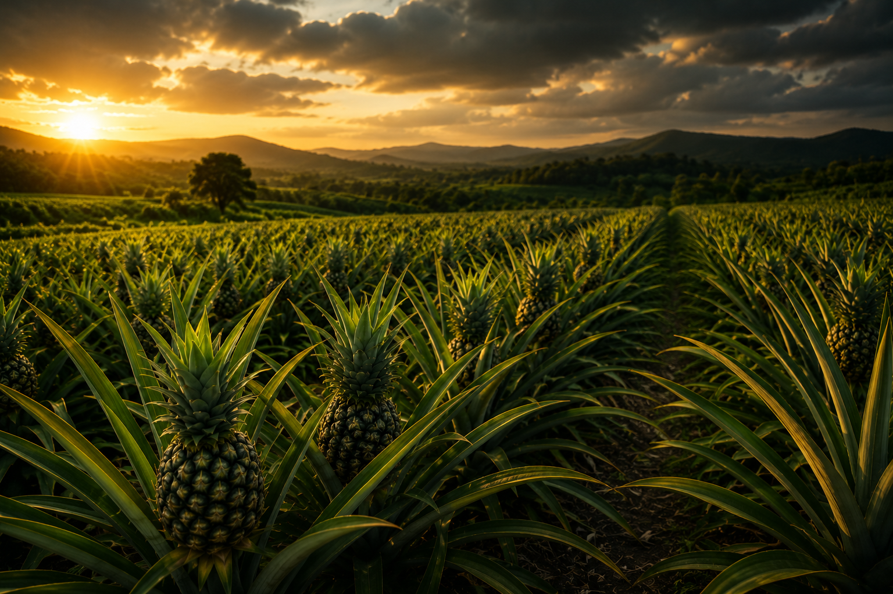

Empowering communities through innovation, sustainable development, and opportunity.
OUR IMPACT
Global Social Solutions Gateway (GSSoG) works to address social and economic challenges through community-driven initiatives that promote empowerment, innovation, inclusion, and sustainable development.
Our programs focus on creating opportunities for women, youth, vulnerable families, and underserved communities while building systems that deliver long-term change.
MEASURABLE CHANGE
Women Empowered
Youth Trained
Persons with Disabilities Included
Community Beneficiaries
ECONOMIC EMPOWERMENT
Through agricultural value-chain development, processing facilities, and market access, GSSoG helps communities generate sustainable income and reduce post-harvest losses.
By supporting local farmers and entrepreneurs, we create jobs, strengthen local economies, and improve household livelihoods.

OUR FOCUS
Sustainable farming and agro-processing.
Creating opportunities for economic independence.
Training future leaders and entrepreneurs.
Supporting vulnerable populations.
Technology-driven community solutions.
Building long-term resilience.
OUR VISION
Together we can transform communities, create opportunity, and build a better future.
Support Our Mission